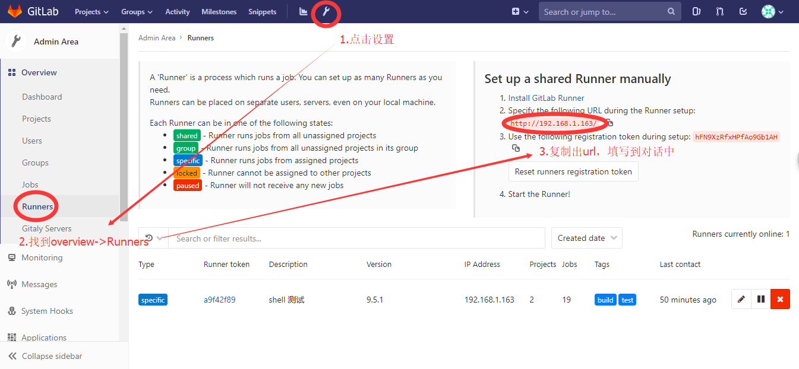
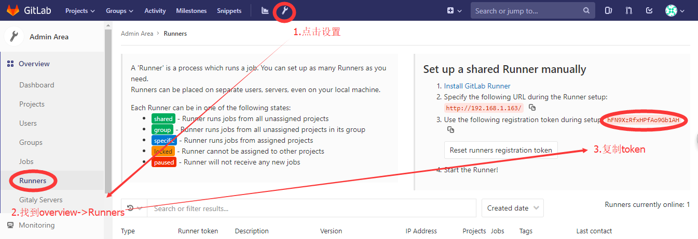
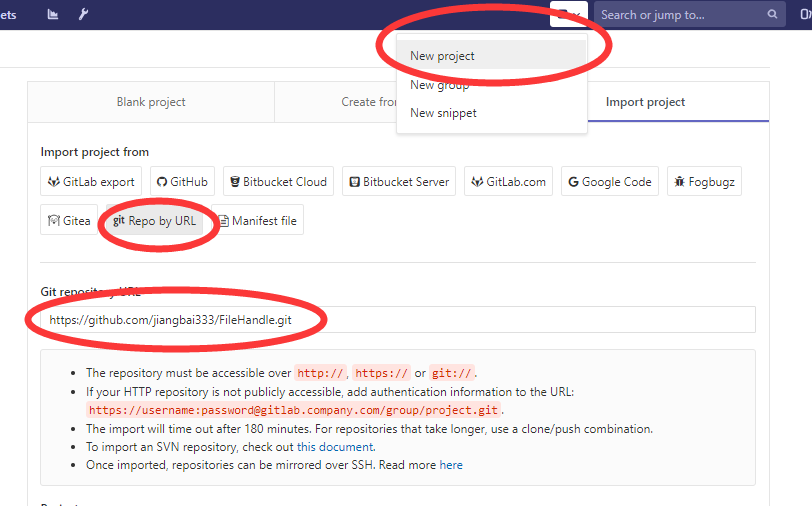
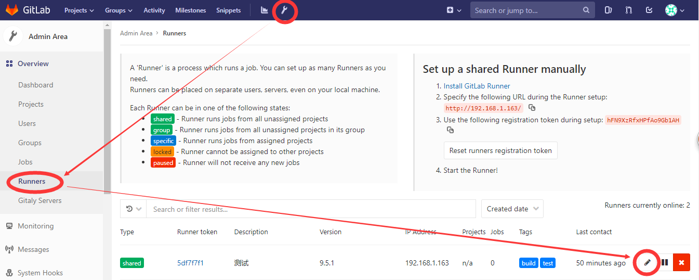
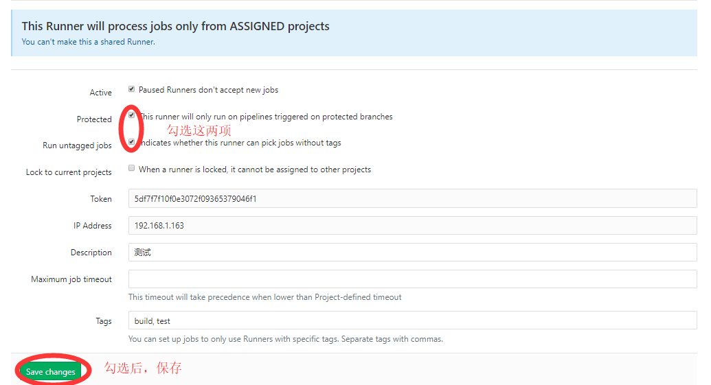
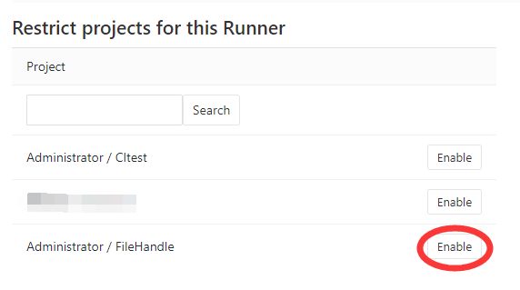
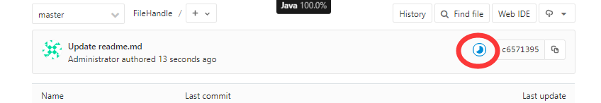
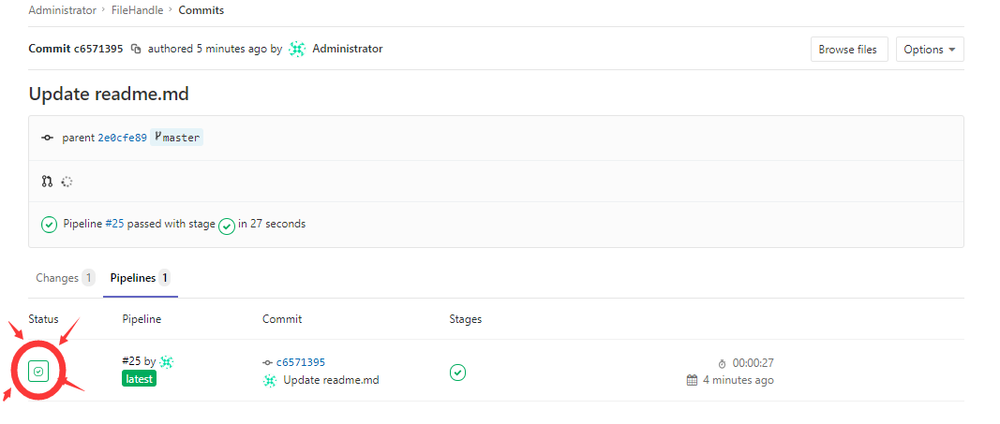
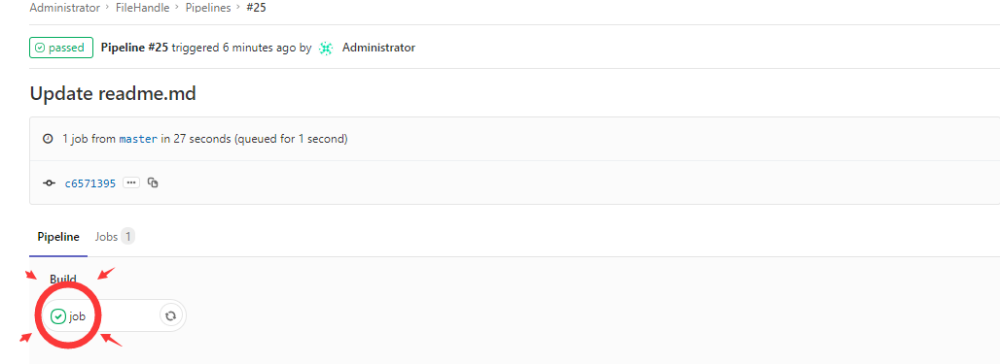
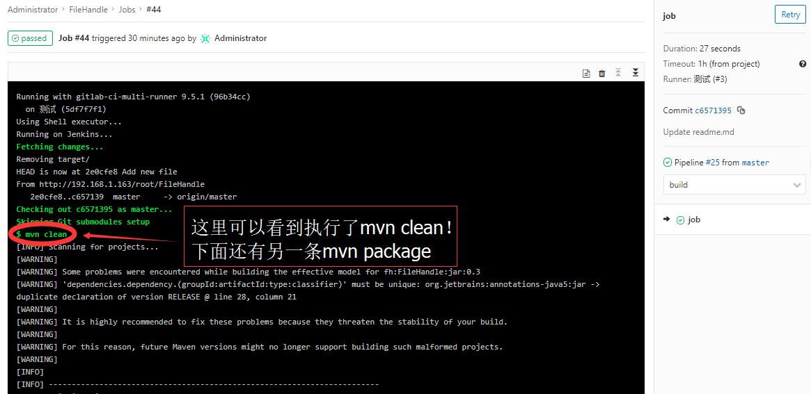

简介
利用Gitlab、Gitlab-runner，实现代码托管与持续集成。
环境安装
安装Gitlab及其所依赖的服务程序
依赖服务程序安装
1 | # yum install -y curl policycoreutils-python openssh-server cronie postfix lokkit |
安装Gitlab
1 | # curl https://packages.gitlab.com/install/repositories/gitlab/gitlab-ee/script.rpm.sh | sudo bash |
安装Gitlab-runner
1 | # curl -L https://packages.gitlab.com/install/repositories/runner/gitlab-runner/script.rpm.sh | sudo bash |
相关配置
配置访问地址
在安装步骤中EXTERNAL_URL="Yourhost" yum -y install gitlab-ee，其中EXTERNAL_URL代表未来访问Gitlab服务的url地址，如果需要更换，可修改/etc/gitlab/gitlab.rb文件，找到以下位置并修改external_url属性：1
2
3
4
5
6## GitLab URL
##! URL on which GitLab will be reachable.
##! For more details on configuring external_url see:
##! https://docs.gitlab.com/omnibus/settings/configuration.html#configuring-the-external-url-for-gitlab
#external_url 'example.gitlab.com'
external_url 'http://ipaddr'
如果你想通过域名进行访问，需要自行绑定域名。若在局域网内，需要自己搭建DNS服务器，详细可参考自建DNS服务器
注册runner
在使用runner前，需要先注册一个runner：1
# gitlab-runner register
执行后，进入对话，填写相应信息1
2
3
4
5
6
7
8
9
10
11
12
13
14
15
16
17
18Running in system-mode.
Please enter the gitlab-ci coordinator URL (e.g. https://gitlab.com/):
http://192.168.1.163/
Please enter the gitlab-ci token for this runner:
hFN9XzRfxHPfAo9Gb1AH
Please enter the gitlab-ci description for this runner:
[Jenkins]: 测试
Please enter the gitlab-ci tags for this runner (comma separated):
build,test
Whether to run untagged builds [true/false]:
[false]:
Whether to lock Runner to current project [true/false]:
[false]:
Registering runner... succeeded runner=hFN9XzRf
Please enter the executor: docker+machine, docker-ssh+machine, docker, parallels, ssh, kubernetes, docker-ssh, shell, virtualbox:
shell
Runner registered successfully. Feel free to start it, but if it's running already the config should be automatically reloaded!
对话信息说明
Please enter the gitlab-ci coordinator URL (e.g. https://gitlab.com/):
输入gitlab-ci的通讯url，用以在runner运行期进行管道通讯。在gitlab客户端界面获取此通讯url并填写到对话中：

Please enter the gitlab-ci token for this runner:
输入gitlab-ci的通讯认证token，在gitlab客户端界面获取认证token并填写到对话中：

Please enter the gitlab-ci description for this runner:
对此runner的描述、简介
Please enter the gitlab-ci tags for this runner (comma separated):
我的理解是，为runner进行分组，以便对job的运行进行管理。以下是官方的说明：
You must set up a Runner to be able to run all the different types of jobs that > it may encounter on the projects it’s shared over. This would be problematic > for large amounts of projects, if it wasn’t for tags.
By tagging a Runner for the types of jobs it can handle, you can make sure > shared Runners will only run the jobs they are equipped to run.
For instance, at GitLab we have Runners tagged with “rails” if they contain the > appropriate dependencies to run Rails test suites.
Whether to run untagged builds [true/false]:
如果此runner中的tag，不存在于某个job的tags属性中，是否允许执行此job。默认为false，也就是说如果我们使用这个runner，那么在添加job的时候，需要在tags中添加build或test，否则将不会执行。
Whether to lock Runner to current project [true/false]:
我的理解是， 若job已被触发，则此runner是否只对当前项目有效 。
Please enter the executor: docker+machine, docker-ssh+machine, docker, parallels, ssh, kubernetes, docker-ssh, shell, virtualbox:
为当前runner选择一个执行器。
通过配置文件修改runner
若在配置过程中出现偏差，可通过编辑配置文件/etc/gitlab-runner/config.toml进行修改:1
2
3
4
5
6
7
8
9
10# vi /etc/gitlab-runner/config.toml
concurrent = 1
check_interval = 0
[[runners]]
name = "测试"
url = "http://192.168.1.163/"
token = "5df7f7f10f0e3072f09365379046f1"
executor = "shell"
[runners.cache]
修改完成后，需要重新启动runner：1
# gitlab-runner restart
测试runner
添加项目
首先，为了进行测试，我们需要想gitlab提交一个项目，为了方便起见，直接引入一个github项目，地址为https://github.com/jiangbai333/FileHandle.git：

将项目关联到runner中
实际上，每个runner可以关联多个项目，而又可以通过job，限制每个项目的CI流程，因此，建议经可能少建立runner，多使用job。
找到runner，点击“笔”进行编辑

设置runner的运行规则

将项目关联到runner

向项目添加.gitlab-runner.yml
.gitlab-runner.yml相当于CI的描述文件，通过它，可以定制CI的执行步骤。
.gitlab-runner.yml 1
2
3
4
5
6
7stages:
- build
job:
stage: build
script:
- mvn clean
- mvn package
保存提交到项目主分支。
查看job运行结果
由于我们在添加.gitlab-runner.yml之前，已经完成了runner与此项目的关联，因此，保存后，runner将自动执行，你会看到项目主页上有一个“蓝色的月牙”。

它代表当前job的运行状态，当CI成功后，将变为“绿色的对号”，如果失败则会变为“红色X”。我们点击它，会出现提交信息页面，此时，由于构建已经完成并且成功了，因此变成了“绿色的对号”（如果构建步骤较为复杂，很有可能，到这里，还是“蓝色的月牙”）。再次点击它：

会看到job的状态（当然也是成功），接下来，点击job，查看详细构建信息：


分解job
上面的例子里，你会发现，clean、package两个构建过程存在于一个job中，我们可以尝试将其分离：
.gitlab-runner.yml 1
2
3
4
5
6
7
8
9
10
11stages:
- build
- dev
job:
stage: build
script:
- mvn clean
job1:
stage: dev
script:
- mvn package
提交后，依然会自动进行构建，但是job与job1将会串行执行，job成功后，继续执行job1。最后，将生成两份构建清单。这部分就不上图了，大家可以自己尝试一下。